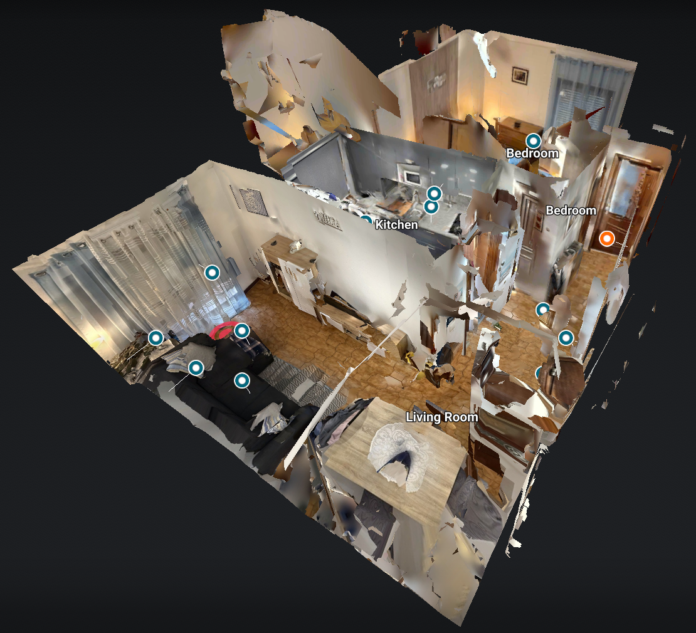
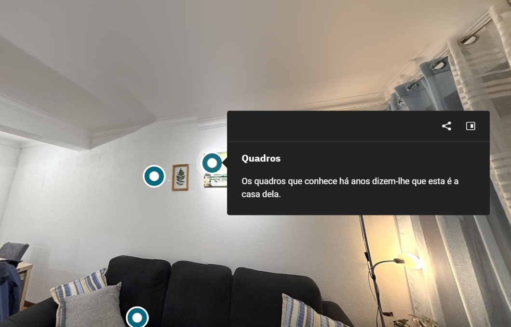
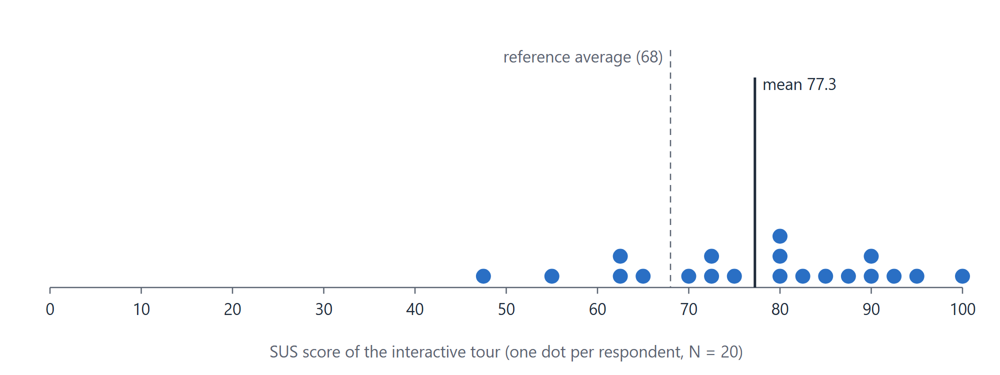

CAMUL 2026/2027 · Group 1 · ISEP
Student-Captured Matterport Tours in a Massive Open Online Course for Dementia Caregivers Facing Crises
Bruno Lopes · Tiago Teixeira · Rodrigo Silva · Ricardo Ferreira · Evandro Carvalho
Instituto Superior de Engenharia do Porto (ISEP), Porto, Portugal
The problem
A crisis breaks the routines a person with dementia relies on
- +Caregivers of people with dementia reported more depression, anxiety and burden during the COVID-19 lockdowns [1]Soysal et al., 2023
- −Informal caregivers do not feel prepared for disasters: no training, no supplies, hard decisions [2]Pickering et al., 2021
- 41 min“Cuidar em Crise”: a free course in European Portuguese, 5 lessons, published on UdemyOur P1 project, Nov. 2026
Five students, one lesson each, on the time line of a crisis: understand it, before, during, after.
The course · Fig. 1
Every lesson has the same sequence — and a Matterport tour

Related work · the gap
Matterport is new in education — and Udemy has no iframes
- Spaces captured by professionals, not by the students who author the course [15], [16]
- Closed platforms that do not allow embedding
- No comparison between a recorded walkthrough and the interactive tour of the same space
- RQ1 · development: which workflow, costs and constraints when a student team captures its own spaces?
- RQ2 · perception: how usable and useful is the tour, and how does the walkthrough compare with the interactive tour?
- RQ3 · iteration: which problems did alpha and beta testing raise, and which design changes followed?
Method · research model
Exploratory case study within design-based research [18]
- 1Platforms
- 2Topic & planning
- 3Lesson template
- 4Scripts
- 5Prototype
- 6Integrated course
- 7Alpha + beta tests
- 8Published
Eight weekly iterations, 22 September to 10 November 2026, each ending with a delivery and teacher feedback.
- D1 design records
- D2 capture form per author
- D3 alpha and beta test records
- D4 116 commits
- D5 questionnaire
- D6 Udemy analytics
Materials · Fig. 2 and Fig. 3
We captured our own homes with a smartphone


Matterport Capture app, free plan · no people, no photos, no documents, no address in view · spaces set as unlisted.
Materials · Table I
Five lessons, four captures, very different devices
| Lesson | Space | Device | Capture points | Capture time | Tags | Walk- through | Main problem |
|---|---|---|---|---|---|---|---|
| L1 | Home of a team member (5 rooms) | iPhone 17 Pro (LiDAR) | 17 | ≈ 15 min | 9 | 69 s | One capture point missing; the free plan does not allow re-uploading |
| L2 | Same space as L1 | — | — | — | 8 | 1:40 | Rooms reached through the 2D floor plan |
| L3 | Living room of a team member | Redmi Note 11 Pro | 2 | ≈ 10 min | 11 | 1:36 | Only 2 points: limited coverage; variable frame rate broke a clip |
| L4 | Apartment, an unfamiliar setting | Samsung A33 5G | 8 | ≈ 45 min | 8 | 2:05 | Its own colour code; narration setup |
| L5 | Public Discover space (fallback) | Third party | — | — | 5* | 58 s | Public spaces cannot be edited: labels overlaid in PowerPoint |
Capture and tagging times are the authors’ estimates (D2). * labels over the video, not tags inside the space.
Materials · Fig. 4
No iframes: the tour enters the course twice
- In the video: a screen recording of the walkthrough, tag by tag, each balloon open
- In the resources: a “3D tour (optional)” link
- No quiz depends on the link — a slow connection or an old phone is never a penalty
Udemy requires ≥ 30 min of video for a free course and reviews its quality: submitted 7 Nov., published 9 Nov. 2026.

Data collection · D5
Same space, same users, two formats
- 1 · VideoNarrated walkthrough of L2 (1:40), then 4 statements
- 2 · TourInteractive tour: find 3 named tags, up to 5 min
- 3 · Same 4 statements+ SUS about the interactive tour
- 4 · Preference+ two open questions and a profile block
Google Forms, European Portuguese, anonymous, adults only, 12–19 November 2026 · convenience sample, minimum 20 answers · the authors did not answer.
Results · RQ1 development
Feasible with free tools — the limits came from the plan and the phones
- 10–45minutes to capture a spaceauthors’ estimates
- 5–30minutes to add the tagsauthors’ estimates
- 0 €free Matterport plan, PowerPoint, free Udemy coursewhole workflow
- 31of 79 commits fell in the final iteration (21 in the prototype)D4
- One active space per account → spaces spread over the authors’ accounts
- No new upload to fix a missing capture point (L1) · fewer points and poorer coverage without LiDAR (L3, L4)
Results · RQ2 perception · Fig. 5
The interactive tour was rated equal to or higher on all four statements
- N = 18 who watched the whole video (of 20 answers)
- Clearest difference: “it held my attention” (Mdn 4 → 4.5); the 5 who changed it all rated the tour higher
- No one preferred the video alone: 10 chose the interactive tour, 10 chose both formats
Fewer than 20 valid paired answers → descriptive statistics only.

Results · RQ2 usability · Fig. 6
Mean SUS score of 77.3 for the interactive tour
77.3SD 13.9 · median 80 · range 47.5–100 (N = 20)
- 14 of 20 scores acceptable (> 70), 5 marginal, 1 below 50
- 79.1 on a computer · 76.0 on a phone
- Above the average of about 70 summarised in [19]

Results · RQ2 the task
75% found the three named tags — navigation was the hard part
- 15/20found all three tags: 7 of 8 on a computer, 8 of 12 on a phone5 min limit
- 11needed less than 2 minutes; 8 between 2 and 5; 1 more than 5 or gave upself-reported
- 16 · 12 · 3reached them by walking · dollhouse or floor plan · the search menumore than one answer allowed
- What helped to understand the home (14 answers): 9 the interactive tour, 4 the video or its narration, 1 both
- Difficulties: navigation 5, audio and video 3, finding tags 1, device 1 · 4 found nothing difficult
- Two authors coded 22 units independently: 95.5% agreement, Cohen’s kappa 0.93
Results · RQ3 iteration · Table II
11 problems in testing; the three severe ones changed every lesson
| Problem | Source | Severity | Design change |
|---|---|---|---|
| A public space with no tags of our own; a tester found no tags | Beta, teacher | High | Each lesson captured its own space, with tags inside it |
| Only about 4–5 min of video per lesson | Beta, teacher | High | Lessons extended to ≈ 8 min of video (41 min in total) |
| No team member appears in the videos | Beta, teacher | High | Narration re-recorded with the webcam on, same corner |
| Walkthrough almost without narration · link could look mandatory | Alpha | Low | Explanation moved into the tags; labelled “3D tour (optional)” |
12 coded units: audio and video 8, assessment 2, finding tags 1, other 1 · 9 problems solved in every lesson they affected, 2 in part (L5 kept the Discover space; L4 and L5 have no captions).
Discussion
The two formats complement each other
- Our 77.3 is consistent with the usability reported for Matterport in nursing education [15] and higher than the 72.1 / 68.1 of a smartphone museum tour [17] — different settings prevent a direct comparison
- The walkthrough guides without navigation effort; the interactive tour adds control at the cost of that effort. Half the respondents chose both
- Plan capture points at doorways and check every route before committing the upload — the free plan allows no correction
- More spatial presence can also compete with learning for cognitive resources [12]
Conclusion
Students can bring their own 3D spaces into a closed platform
- A feasible workflow with free tools: a recorded walkthrough inside each lesson video and an optional link to the interactive tour, with no quiz depending on the link
- SUS 77.3 · 75% found the three named tags · nobody preferred the video alone
- Testing led to design changes in every lesson: own spaces with tags inside, ≈ 8 min of video, narration re-recorded with the webcam on
- The main constraints came from the plan and the devices, not from the technology itself
Limitations
What this study does not show
- Small convenience sample (N = 20), few caregivers; no person with dementia took part
- Only the space of L1 and L2 was evaluated — L5, the public space, was not
- Everyone saw the video first: the order may have shaped the ratings
- Capture and tagging times are the authors’ estimates
- We measured perception, not learning
Future work
Five next steps
- 1Quizzes inside the tour, at the tags: the question in the place the learner has just seen
- 2Repeat it with real informal caregivers, the intended audience
- 3A platform with iframes: embed the tour and compare it with the walkthrough
- 4A mobile-first version: 12 of 20 respondents used a phone
- 5Captions in all lessons and captures with more points or LiDAR devices
- Paper, figures and tables: see the delivered .zip · Group 1
Team · Group 1
Who did what
| Member | Paper | Project and data |
|---|---|---|
| Bruno Lopes | Section 3 Results · IEEE formatting | Lesson L1 · figures and tables · Udemy analytics · coder 1 · coordination |
| Tiago Teixeira | Sections 1.1 and 1.2 review · this presentation | Lesson L2 · Google Forms questionnaire · coder 2 · capture form L2 |
| Rodrigo Silva | Section 6 Future Work · Section 2 review | Lesson L3 · capture form L3 · references |
| Ricardo Ferreira | Section 4 Discussion · Section 3 review | Lesson L4 · capture form L4 · references |
| Evandro Carvalho | Section 5 Conclusion · Sections 4–6 review | Lesson L5 · capture form L5 · references |
Sections 1 and 2 and the abstract were written jointly and reviewed by every author · each member also gathered questionnaire answers and confirmed the DOI of their references.
Thank you
Questions?
- RQ1 · A free workflow works; the plan and the phones set the limits
- RQ2 · SUS 77.3 · 75% found the three tags · nobody preferred the video alone
- RQ3 · Testing changed every lesson: own spaces, more video, webcam on
Student-Captured Matterport Tours in a MOOC for Dementia Caregivers Facing Crises
Group 1 · Bruno Lopes · Tiago Teixeira · Rodrigo Silva · Ricardo Ferreira · Evandro Carvalho
Instituto Superior de Engenharia do Porto (ISEP) · CAMUL 2026/2027 · the course on Udemy ↗